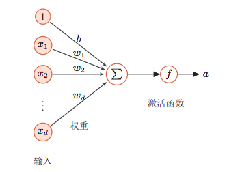
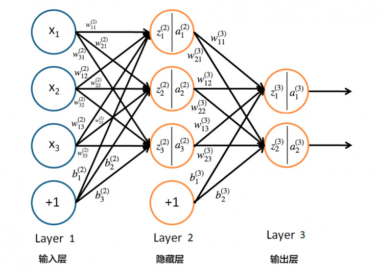

<!DOCTYPE html>
<html>
<head><meta name="generator" content="Hexo 3.8.0">
  <!-- hexo-inject:begin --><!-- hexo-inject:end --><meta charset="utf-8">
  
  <title>bp算法 | 浙江大学超算队</title>
  <meta name="viewport" content="width=device-width, initial-scale=1, maximum-scale=1">
  
  <meta name="keywords" content="TechMachine Learning">
  
  
  
  
  <meta name="description" content="本文探讨BP算法。">
<meta name="keywords" content="Tech,Machine Learning">
<meta property="og:type" content="article">
<meta property="og:title" content="BP算法">
<meta property="og:url" content="https://zjusct.github.io/2018/12/24/bp/index.html">
<meta property="og:site_name" content="浙江大学超算队">
<meta property="og:description" content="本文探讨BP算法。">
<meta property="og:locale" content="default">
<meta property="og:image" content="https://zjusct.github.io/2018/12/24/bp/neuron.png">
<meta property="og:image" content="https://zjusct.github.io/2018/12/24/bp/bp_net.jpg">
<meta property="og:updated_time" content="2021-02-11T05:46:05.721Z">
<meta name="twitter:card" content="summary">
<meta name="twitter:title" content="BP算法">
<meta name="twitter:description" content="本文探讨BP算法。">
<meta name="twitter:image" content="https://zjusct.github.io/2018/12/24/bp/neuron.png">
  

  

  <link rel="icon" href="/css/images/ZJUSCT_Icon_Black.png">
  <link rel="apple-touch-icon" href="/css/images/ZJUSCT_Icon_Black.png">
  
    <link href="//fonts.googleapis.com/css?family=Source+Code+Pro" rel="stylesheet" type="text/css">
  
  <link href="https://fonts.googleapis.com/css?family=Open+Sans|Montserrat:700" rel="stylesheet" type="text/css">
  <link href="https://fonts.googleapis.com/css?family=Roboto:400,300,300italic,400italic" rel="stylesheet" type="text/css">
  <link href="//cdn.bootcss.com/font-awesome/4.6.3/css/font-awesome.min.css" rel="stylesheet">
  <style type="text/css">
    @font-face{font-family:futura-pt;src:url(https://use.typekit.net/af/9749f0/00000000000000000001008f/27/l?subset_id=2&fvd=n5) format("woff2");font-weight:500;font-style:normal;}
    @font-face{font-family:futura-pt;src:url(https://use.typekit.net/af/90cf9f/000000000000000000010091/27/l?subset_id=2&fvd=n7) format("woff2");font-weight:500;font-style:normal;}
    @font-face{font-family:futura-pt;src:url(https://use.typekit.net/af/8a5494/000000000000000000013365/27/l?subset_id=2&fvd=n4) format("woff2");font-weight:lighter;font-style:normal;}
    @font-face{font-family:futura-pt;src:url(https://use.typekit.net/af/d337d8/000000000000000000010095/27/l?subset_id=2&fvd=i4) format("woff2");font-weight:400;font-style:italic;}</style>
  <link rel="stylesheet" href="../../../../css/style.css">

  <script src="../../../../js/jquery-3.1.1.min.js"></script>
  <script src="../../../../js/bootstrap.js"></script>

  <!-- Bootstrap core CSS -->
  <link rel="stylesheet" href="/css/bootstrap.css">

  
    <link rel="stylesheet" href="../../../../css/dialog.css">
  

  

  
    <link rel="stylesheet" href="/css/header-post.css"><!-- hexo-inject:begin --><!-- hexo-inject:end -->
  

  
  
  

</head>
</html>


  <body data-spy="scroll" data-target="#toc" data-offset="50">


  

  
    <!-- hexo-inject:begin --><!-- hexo-inject:end --><div id="container">
      <div id="wrap">
        
          <header style="height:75px;" class="main_header">

    <div id="allheader" class="navbar navbar-default navbar-static-top" role="navigation">
        <div class="navbar-inner">

          <div class="container" style="height: 75px;">
            <button type="button" class="navbar-toggle" data-toggle="collapse" data-target=".navbar-collapse">
              <span class="sr-only">Toggle navigation</span>
              <span class="icon-bar"></span>
              <span class="icon-bar"></span>
              <span class="icon-bar"></span>
            </button>

            
              <a class="brand" style="
                 margin-top: 0px;" href="#" data-toggle="modal" data-target="#myModal">
                  
              </a>
            

            <div class="navbar-collapse collapse">
              <ul class="hnav navbar-nav">
                
                  <li> <a class="main-nav-link" href="../../../../index.html">Home</a> </li>
                
                  <li> <a class="main-nav-link" href="../../../../archives">Articles</a> </li>
                
                  <li> <a class="main-nav-link" href="../../../../about">About</a> </li>
                
                  <li> <a class="main-nav-link" href="../../../../teamIntro">TeamIntro</a> </li>
                
                  <li> <a class="main-nav-link" href="../../../../contact">JoinUs</a> </li>
                
                  <li><div id="search-form-wrap">

    <form class="search-form">
        <input type="text" class="ins-search-input search-form-input" placeholder>
        <button type="submit" class="search-form-submit"></button>
    </form>
    <div class="ins-search">
    <div class="ins-search-mask"></div>
    <div class="ins-search-container">
        <div class="ins-input-wrapper">
            <input type="text" class="ins-search-input" placeholder="Type something...">
            <span class="ins-close ins-selectable"><i class="fa fa-times-circle"></i></span>
        </div>
        <div class="ins-section-wrapper">
            <div class="ins-section-container"></div>
        </div>
    </div>
</div>
<script>
(function (window) {
    var INSIGHT_CONFIG = {
        TRANSLATION: {
            POSTS: 'Posts',
            PAGES: 'Pages',
            CATEGORIES: 'Categories',
            TAGS: 'Tags',
            UNTITLED: '(Untitled)',
        },
        ROOT_URL: '/',
        CONTENT_URL: '../../../../content.json',
    };
    window.INSIGHT_CONFIG = INSIGHT_CONFIG;
})(window);
</script>
<script src="../../../../js/insight.js"></script>

</div></li>
            </ul></div>
          </div>

      </div>
    </div>

</header>

<div style="height:75px;witdh:100;">


</div>
        

        <div id="content" class="outer">
          
            <section id="main" style="float:none;"><article id="post-bp" style="width: 75%; float:left;" class="article article-type-post" itemscope itemprop="blogPost">
    <div id="articleInner" class="article-inner">
        
        
        <header class="article-header">
            
  
    <h1 class="thumb" itemprop="name">
      BP算法
    </h1>
  

        </header>
        
        <div class="article-meta">
            
	<a href class="article-date">
	  <time datetime="2018-12-24T13:03:59.000Z" itemprop="datePublished">2018-12-24</time>
	</a>

            
            
	<a class="article-author">
		<span id="postAuthor">
			Author: 陈岩
		</span>
	</a>

            <div class="article-article-tags-box">
              <ul class="article-tag-list"><li class="article-tag-list-item"><a class="article-tag-list-link" href="../../../../tags/Machine-Learning/">Machine Learning</a></li><li class="article-tag-list-item"><a class="article-tag-list-link" href="../../../../tags/Tech/">Tech</a></li></ul>
            </div>
        </div>
        <div class="article-entry" itemprop="articleBody">
            
            <p>本文探讨BP算法。</p>
<a id="more"></a>

<h1 id="Feed-forward-neural-network-and-back-propagation"><a href="#Feed-forward-neural-network-and-back-propagation" class="headerlink" title="Feed forward neural network and back propagation"></a>Feed forward neural network and back propagation</h1><h2 id="1-Neuron-structure"><a href="#1-Neuron-structure" class="headerlink" title="1. Neuron structure"></a>1. Neuron structure</h2><p></p>
<p>上图是一种典型的神经元结构，$x_n$是神经元的输入，将输入加权求和后再通过激活函数即可得到此神经元的输出：<br>$$t = \sum_{i=1}^{n}{w_ix_i} + b$$<br>$$a = f(t)$$</p>
<p>为计算方便，可将偏置$b$提到求和符号里面，相当于加入一个恒为1的输入值，对应的权重为$b$：<br>$$t = \sum_{i=0}^{n}{w_ix_i},(x_0 = 1, w_0 = b)$$<br>$$a = f(t)$$<br>此即为上图神经元结构对应的表达式</p>
<p>常用的激活函数有sigmoid, ReLU, tanh等。</p>
<h2 id="2-Network-structure"><a href="#2-Network-structure" class="headerlink" title="2. Network structure"></a>2. Network structure</h2><p></p>
<p>这是一个简单的3层网络，输入层有3个输入值，隐藏层包含3个隐藏神经元，最后是两个输出值<br>隐藏层神经元的前向计算过程：</p>
<p>$$z_i^{l} = \sum_{i=0}^{n}w_{ij}^{l}x_j, (x_0 = 1, w_0 = b)$$</p>
<p>$$a_i^l = f(z_i^l)$$</p>
<p>$l$表示第几层。</p>
<p>这个网络的抽象数学表达式为：<br>$$F(x) = f_3(f_2(x * W_2 + b_2) * W_3 + b_3)$$</p>
<p>事实上，深度神经网络一般都能够抽象为一个复合的非线性多元函数，有多少隐藏层就有多少层复合函数：<br>$$F(x) = f_n\left(\dots f_3(f_2(f_1(x) * w_1 + b_1) * w_2 + b_2)\dots\right)$$</p>
<h2 id="3-Loss"><a href="#3-Loss" class="headerlink" title="3. Loss"></a>3. Loss</h2><p>Loss，即损失，用来衡量神经网络的输出值与实际值的误差，对于不同的问题，通常会定义不同的loss函数</p>
<p>回归问题常用的均方误差：<br>$$MSE = \frac{1}{n}\sum_{i=1}^{n}(Y - f(x))^2$$<br>$Y$为实际值，$f(x)$为网络预测值</p>
<p>分类问题常用的交叉熵(m类)：<br>$$L = \sum_{k=1}^{n}\sum_{i=1}^{m}l_{ki}log(p_{ki})$$<br>$l_{ki}$表示第k个样本实际是否属于第i类（0，1编码），$p_{ki}$表示第k个样本属于第i类的概率值</p>
<p>特别地，二分类问题的交叉熵损失函数形式为：<br>$$L = \sum_{i=1}^{n}[y_ilog(p_i) + (1 - y_i)log(1 - p_i)]$$<br>$y_i$为第i个样本所属类别，$p_i$为第i个样本属于$y_i$类的概率</p>
<h2 id="4-Back-propagation"><a href="#4-Back-propagation" class="headerlink" title="4. Back propagation"></a>4. Back propagation</h2><p>BP 是用来将loss反向传播的算法，用来调整网络中神经元间连接的权重和偏置，整个训练的过程就是：前向计算网络输出<br>-&gt;;根据当前网络输出计算loss-&gt;BP算法反向传播loss调整网络参数，不断循环这样的三步直到loss达到最小或达到指定停止条件</p>
<p>BP算法的本质是求导的链式法则，对于上面的三层网络，假设其损失函数为$C$，激活函数为$\sigma$，第$l$第$i$个神经元的输入为$z_i^{(l)}$，输出为$a_i^{(l)}$</p>
<p>则通过梯度下降来更新权值和偏置的公式如下：<br>$$W_{ij}^{(l)} = W_{ij}^{(l)} - \eta\frac{\partial}{\partial W_{ij}^{(l)}}C\tag1$$<br>$$b_{i}^{(l)} = b_{i}^{(l)} - \eta\frac{\partial}{\partial b_{i}^{(l)}}C\tag2$$</p>
<p>$W_{ij}^{(l)}$表示第$l$层第$i$个神经元与第$l - 1$层第$j$个神经元连接的权值，$b_i^{(l)}$表示第$l$层第$i$个神经元的偏置</p>
<p>$\eta$表示学习率</p>
<p>由更新公式可见主要问题在于求解损失函数关于权值和偏置的偏导数</p>
<p>第$l$层第$i$个神经元的输入$z_i^{(l)}$为：<br>$$z_i^{(l)} = \sum_{j=1}^{n^{(l-1)}}{W_{ij}^{(l)}a_j^{(l-1)}} + b_i^{l}\tag3$$</p>
<p>则更新公式中偏导项可化为:</p>
<p>$$\frac{\partial}{\partial W_{ij}^{(l)}}C = \frac{\partial C}{\partial z_i^{(l)}} \bullet \frac{\partial z_i^{(l)}}{\partial W_{ij}^{(l)}} = \frac{\partial C}{\partial z_i^{(l)}} \bullet a_i^{(l-1)}\tag4$$</p>
<p>$$\frac{\partial}{\partial b_{i}^{(l)}}C = \frac{\partial C}{\partial z_i^{(l)}} \bullet \frac{\partial z_i^{(l)}}{\partial b_{i}^{(l)}} = \frac{\partial C}{\partial z_i^{(l)}}\tag5$$</p>
<p>定义</p>
<p>$$\delta_i^{(l)} = \frac{\partial}{\partial z_i^{(l)}}C\tag6$$</p>
<p>现在问题转化为求解$\delta_i^{(l)}$，对第$l$层第$j$个神经元有：<br>$$<br>\delta_j^{(l)} = \frac{\partial C}{\partial z_j^{(l)}} = \sum_{i=1}^{n^{(l+1)}}\frac{\partial C}{\partial z_i^{(l+1)}} \bullet \frac{\partial z_i^{(l+1)}}{\partial a_j^{(l)}} \bullet \frac{\partial a_j^{(l)}}{\partial z_j^{(l)}} \<br>=\sum_{i=1}^{n^{(l+1)}}\delta_i^{(l+1)} \bullet \frac{\partial(W_{ij}^{l+1} + b_i^{(l+1)})}{\partial a_j^{(l)}} \bullet \sigma^\prime(z_j^{(l)})\<br>=\sum_{i=1}^{n^{(l+1)}}\delta_i^{(l+1)} \bullet W_{ij}^{(l+1)} \bullet \sigma^\prime(z_j^{(l)})\tag7<br>$$</p>
<p>则：<br>$$\delta^{(l)} = ((W^{(l+1)})^T\delta^{(l+1)})\odot\sigma^\prime(z^{(l)})\tag8$$</p>
<p>损失函数关于权重和偏置的偏导分别为：<br>$$\frac{\partial C}{\partial W_{ij}^{(l)}} = a_i^{(l-1)}\delta_i^{(l)}\tag9$$<br>$$\frac{\partial C}{\partial b_{i}^{(l)}} =\delta_i^{(l)}\tag{10}$$</p>
<p>误差根据8式由输出层向后传播，再结合1，2，9，10四式对权重和偏置进行更新</p>
<h2 id="5-实现"><a href="#5-实现" class="headerlink" title="5.实现"></a>5.实现</h2><p>下面是一个简单3隐层神经网络的实现</p>
<p>In [ ]:</p>
<figure class="highlight python"><table><tr><td class="gutter"><pre><span class="line">1</span><br><span class="line">2</span><br><span class="line">3</span><br><span class="line">4</span><br><span class="line">5</span><br><span class="line">6</span><br><span class="line">7</span><br><span class="line">8</span><br><span class="line">9</span><br><span class="line">10</span><br><span class="line">11</span><br><span class="line">12</span><br><span class="line">13</span><br><span class="line">14</span><br><span class="line">15</span><br><span class="line">16</span><br><span class="line">17</span><br><span class="line">18</span><br><span class="line">19</span><br><span class="line">20</span><br><span class="line">21</span><br><span class="line">22</span><br><span class="line">23</span><br><span class="line">24</span><br><span class="line">25</span><br><span class="line">26</span><br><span class="line">27</span><br><span class="line">28</span><br><span class="line">29</span><br><span class="line">30</span><br><span class="line">31</span><br><span class="line">32</span><br><span class="line">33</span><br><span class="line">34</span><br><span class="line">35</span><br><span class="line">36</span><br><span class="line">37</span><br><span class="line">38</span><br><span class="line">39</span><br><span class="line">40</span><br><span class="line">41</span><br><span class="line">42</span><br><span class="line">43</span><br><span class="line">44</span><br><span class="line">45</span><br><span class="line">46</span><br><span class="line">47</span><br><span class="line">48</span><br><span class="line">49</span><br><span class="line">50</span><br><span class="line">51</span><br><span class="line">52</span><br><span class="line">53</span><br><span class="line">54</span><br><span class="line">55</span><br><span class="line">56</span><br><span class="line">57</span><br><span class="line">58</span><br><span class="line">59</span><br><span class="line">60</span><br><span class="line">61</span><br><span class="line">62</span><br><span class="line">63</span><br><span class="line">64</span><br><span class="line">65</span><br><span class="line">66</span><br><span class="line">67</span><br><span class="line">68</span><br><span class="line">69</span><br><span class="line">70</span><br><span class="line">71</span><br><span class="line">72</span><br><span class="line">73</span><br><span class="line">74</span><br><span class="line">75</span><br><span class="line">76</span><br><span class="line">77</span><br><span class="line">78</span><br><span class="line">79</span><br><span class="line">80</span><br><span class="line">81</span><br><span class="line">82</span><br><span class="line">83</span><br><span class="line">84</span><br><span class="line">85</span><br><span class="line">86</span><br><span class="line">87</span><br><span class="line">88</span><br><span class="line">89</span><br><span class="line">90</span><br><span class="line">91</span><br><span class="line">92</span><br><span class="line">93</span><br><span class="line">94</span><br><span class="line">95</span><br><span class="line">96</span><br><span class="line">97</span><br><span class="line">98</span><br><span class="line">99</span><br><span class="line">100</span><br><span class="line">101</span><br><span class="line">102</span><br><span class="line">103</span><br><span class="line">104</span><br><span class="line">105</span><br><span class="line">106</span><br><span class="line">107</span><br><span class="line">108</span><br><span class="line">109</span><br><span class="line">110</span><br><span class="line">111</span><br><span class="line">112</span><br><span class="line">113</span><br><span class="line">114</span><br><span class="line">115</span><br><span class="line">116</span><br><span class="line">117</span><br><span class="line">118</span><br><span class="line">119</span><br><span class="line">120</span><br><span class="line">121</span><br><span class="line">122</span><br><span class="line">123</span><br><span class="line">124</span><br><span class="line">125</span><br><span class="line">126</span><br><span class="line">127</span><br><span class="line">128</span><br><span class="line">129</span><br><span class="line">130</span><br><span class="line">131</span><br><span class="line">132</span><br><span class="line">133</span><br><span class="line">134</span><br><span class="line">135</span><br><span class="line">136</span><br><span class="line">137</span><br><span class="line">138</span><br><span class="line">139</span><br><span class="line">140</span><br><span class="line">141</span><br><span class="line">142</span><br><span class="line">143</span><br><span class="line">144</span><br><span class="line">145</span><br><span class="line">146</span><br><span class="line">147</span><br><span class="line">148</span><br><span class="line">149</span><br><span class="line">150</span><br><span class="line">151</span><br><span class="line">152</span><br><span class="line">153</span><br><span class="line">154</span><br><span class="line">155</span><br><span class="line">156</span><br><span class="line">157</span><br><span class="line">158</span><br><span class="line">159</span><br><span class="line">160</span><br><span class="line">161</span><br><span class="line">162</span><br><span class="line">163</span><br><span class="line">164</span><br><span class="line">165</span><br><span class="line">166</span><br><span class="line">167</span><br></pre></td><td class="code"><pre><span class="line"><span class="keyword">import</span> numpy <span class="keyword">as</span> np</span><br><span class="line"></span><br><span class="line"><span class="function"><span class="keyword">def</span> <span class="title">loss</span><span class="params">(pred, y)</span>:</span></span><br><span class="line">    <span class="keyword">return</span> np.sum((pred - y) ** <span class="number">2</span>)</span><br><span class="line"></span><br><span class="line"><span class="function"><span class="keyword">def</span> <span class="title">loss_prime</span><span class="params">(pred, y)</span>:</span></span><br><span class="line">    <span class="keyword">return</span> pred - y</span><br><span class="line"></span><br><span class="line"><span class="class"><span class="keyword">class</span> <span class="title">network</span>:</span></span><br><span class="line"></span><br><span class="line">    <span class="function"><span class="keyword">def</span> <span class="title">__init__</span><span class="params">(self, input_size, hidden_size, num_layers, output_size, loss = loss, loss_prime = loss_prime)</span>:</span></span><br><span class="line">        self.input_size = input_size</span><br><span class="line">        self.hidden_size = hidden_size</span><br><span class="line">        self.num_layers = num_layers</span><br><span class="line">        self.output_size = output_size</span><br><span class="line"></span><br><span class="line">        <span class="comment"># activation function</span></span><br><span class="line">        self.activation = self.sigmoid</span><br><span class="line">        <span class="comment"># derivative of activation function</span></span><br><span class="line">        self.activation_prime = self.sigmoid_prime</span><br><span class="line">        <span class="comment"># loss funciton</span></span><br><span class="line">        self.loss = loss</span><br><span class="line">        <span class="comment"># derivative of loss function</span></span><br><span class="line">        self.loss_prime = loss_prime</span><br><span class="line"></span><br><span class="line">        <span class="comment"># input-&gt;hidden</span></span><br><span class="line">        self.w_ih = np.random.randn(input_size, hidden_size)</span><br><span class="line">        self.b_ih = np.random.randn(<span class="number">1</span>, hidden_size)</span><br><span class="line"></span><br><span class="line">        <span class="comment"># hidden layers</span></span><br><span class="line">        self.W_hh = [np.random.randn(hidden_size, hidden_size) <span class="keyword">for</span> _ <span class="keyword">in</span> range(num_layers - <span class="number">1</span>)]</span><br><span class="line">        self.B_hh = [np.random.randn(<span class="number">1</span>, hidden_size) <span class="keyword">for</span> _ <span class="keyword">in</span> range(num_layers - <span class="number">1</span>)]</span><br><span class="line"></span><br><span class="line">        <span class="comment"># hidden-&gt;output</span></span><br><span class="line">        self.w_ho = np.random.randn(hidden_size, output_size)</span><br><span class="line">        self.b_ho = np.random.randn(<span class="number">1</span>, output_size)</span><br><span class="line"></span><br><span class="line">        <span class="comment"># assemble w and b</span></span><br><span class="line">        self.W = [self.w_ih]</span><br><span class="line">        self.W.extend(self.W_hh)</span><br><span class="line">        self.W.append(self.w_ho)</span><br><span class="line"></span><br><span class="line">        self.B = [self.b_ih]</span><br><span class="line">        self.B.extend(self.B_hh)</span><br><span class="line">        self.B.append(self.b_ho)</span><br><span class="line"></span><br><span class="line">    <span class="comment"># activation</span></span><br><span class="line">    <span class="function"><span class="keyword">def</span> <span class="title">sigmoid</span><span class="params">(self, x)</span>:</span></span><br><span class="line">        <span class="keyword">return</span> <span class="number">1.0</span> / (<span class="number">1</span> + np.exp(-x))</span><br><span class="line"></span><br><span class="line">    <span class="function"><span class="keyword">def</span> <span class="title">sigmoid_prime</span><span class="params">(self, x)</span>:</span></span><br><span class="line">        <span class="keyword">return</span> self.sigmoid(x) * (<span class="number">1</span> - self.sigmoid(x))</span><br><span class="line"></span><br><span class="line">    <span class="comment"># forward pass, calculate the output of the network</span></span><br><span class="line">    <span class="function"><span class="keyword">def</span> <span class="title">forward</span><span class="params">(self, a)</span>:</span></span><br><span class="line">        <span class="keyword">for</span> w, b <span class="keyword">in</span> zip(self.W, self.B):</span><br><span class="line">            a = self.activation(np.dot(a, w) + b)</span><br><span class="line">        <span class="keyword">return</span> a</span><br><span class="line"></span><br><span class="line">    <span class="comment"># backpropagate error</span></span><br><span class="line">    <span class="function"><span class="keyword">def</span> <span class="title">backward</span><span class="params">(self, x, y)</span>:</span></span><br><span class="line">        delta_w = [np.zeros(w.shape) <span class="keyword">for</span> w <span class="keyword">in</span> self.W]</span><br><span class="line">        delta_b = [np.zeros(b.shape) <span class="keyword">for</span> b <span class="keyword">in</span> self.B]</span><br><span class="line"></span><br><span class="line">        <span class="comment"># get output of each layer in forward pass</span></span><br><span class="line">        out = x</span><br><span class="line">        outs = []</span><br><span class="line">        zs = []</span><br><span class="line">        <span class="keyword">for</span> w, b <span class="keyword">in</span> zip(self.W, self.B):</span><br><span class="line">            z = np.dot(out, w) + b</span><br><span class="line">            zs.append(z)</span><br><span class="line">            out = self.activation(z)</span><br><span class="line">            outs.append(out)</span><br><span class="line"></span><br><span class="line">        <span class="comment"># δ of last layer</span></span><br><span class="line">        delta = self.loss_prime(outs[<span class="number">-1</span>], y) * self.activation_prime(zs[<span class="number">-1</span>])</span><br><span class="line"></span><br><span class="line">        delta_b[<span class="number">-1</span>] = delta</span><br><span class="line">        delta_w[<span class="number">-1</span>] = np.dot(outs[<span class="number">-2</span>].transpose(), delta)</span><br><span class="line"></span><br><span class="line">        <span class="keyword">for</span> i <span class="keyword">in</span> range(<span class="number">2</span>, len(delta_w)):</span><br><span class="line">            delta = np.dot(delta, self.W[-i+<span class="number">1</span>].transpose()) * self.activation_prime(zs[-i])</span><br><span class="line">            delta_b[-i] = delta</span><br><span class="line">            delta_w[-i] = np.dot(outs[-i<span class="number">-1</span>].transpose(), delta)</span><br><span class="line"></span><br><span class="line">        <span class="keyword">return</span> delta_w, delta_b</span><br><span class="line"></span><br><span class="line">    <span class="comment"># update w and b</span></span><br><span class="line">    <span class="function"><span class="keyword">def</span> <span class="title">update</span><span class="params">(self, batch, lr)</span>:</span></span><br><span class="line">        delta_w = [np.zeros(w.shape) <span class="keyword">for</span> w <span class="keyword">in</span> self.W]</span><br><span class="line">        delta_b = [np.zeros(b.shape) <span class="keyword">for</span> b <span class="keyword">in</span> self.B]</span><br><span class="line"></span><br><span class="line">        <span class="keyword">for</span> x, y <span class="keyword">in</span> batch:</span><br><span class="line">            d_w, d_b = self.backward(x, y)</span><br><span class="line">            delta_w = [a + b <span class="keyword">for</span> a, b <span class="keyword">in</span> zip(delta_w, d_w)]</span><br><span class="line">            delta_b = [a + b <span class="keyword">for</span> a, b <span class="keyword">in</span> zip(delta_b, d_b)]</span><br><span class="line"></span><br><span class="line">        self.W = [w - lr * t <span class="keyword">for</span> w, t <span class="keyword">in</span> zip(self.W, delta_w)]</span><br><span class="line">        self.B = [b - lr * t <span class="keyword">for</span> b, t <span class="keyword">in</span> zip(self.B, delta_b)]</span><br><span class="line"></span><br><span class="line">    <span class="comment"># SGD training</span></span><br><span class="line">    <span class="function"><span class="keyword">def</span> <span class="title">train</span><span class="params">(self, train_data, epochs, batch_size, lr)</span>:</span></span><br><span class="line">        <span class="keyword">for</span> i <span class="keyword">in</span> range(epochs):</span><br><span class="line">            np.random.shuffle(train_data)</span><br><span class="line">            batches = [train_data[t : t + batch_size] <span class="keyword">for</span> t <span class="keyword">in</span> range(<span class="number">0</span>, len(train_data), batch_size)]</span><br><span class="line"></span><br><span class="line">            <span class="keyword">for</span> batch <span class="keyword">in</span> batches:</span><br><span class="line">                self.update(batch, lr)</span><br><span class="line"></span><br><span class="line">            loss = <span class="number">0</span></span><br><span class="line">            <span class="keyword">for</span> x, y <span class="keyword">in</span> train_data:</span><br><span class="line">                loss += self.loss(self.forward(x), y)</span><br><span class="line">            loss /= len(train_data)</span><br><span class="line"></span><br><span class="line">            print(<span class="string">"Epoch %d done, loss: %f"</span> % (i + <span class="number">1</span>, loss))</span><br><span class="line"></span><br><span class="line">    <span class="comment"># predict</span></span><br><span class="line">    <span class="function"><span class="keyword">def</span> <span class="title">predict</span><span class="params">(self, x)</span>:</span></span><br><span class="line">        <span class="keyword">return</span> self.forward(x)</span><br><span class="line"></span><br><span class="line"></span><br><span class="line"><span class="comment"># use it for handwriting digits classification</span></span><br><span class="line"><span class="keyword">import</span> tensorflow <span class="keyword">as</span> tf</span><br><span class="line">mnist = tf.keras.datasets.mnist</span><br><span class="line"></span><br><span class="line"><span class="function"><span class="keyword">def</span> <span class="title">onehot</span><span class="params">(y)</span>:</span></span><br><span class="line">    arr = np.zeros([y.shape[<span class="number">0</span>], <span class="number">10</span>])</span><br><span class="line">    <span class="keyword">for</span> i <span class="keyword">in</span> range(y.shape[<span class="number">0</span>]):</span><br><span class="line">        arr[i][y[i]] = <span class="number">1</span></span><br><span class="line">    <span class="keyword">return</span> arr</span><br><span class="line"></span><br><span class="line">(x_train, y_train),(x_test, y_test) = mnist.load_data()</span><br><span class="line">x_train, x_test = x_train / <span class="number">255.0</span>, x_test / <span class="number">255.0</span></span><br><span class="line">x_train = x_train.reshape([<span class="number">-1</span>, <span class="number">28</span> * <span class="number">28</span>])</span><br><span class="line">x_test = x_test.reshape([<span class="number">-1</span>, <span class="number">28</span> * <span class="number">28</span>])</span><br><span class="line">y_train = onehot(y_train)</span><br><span class="line">y_test = onehot(y_test)</span><br><span class="line"></span><br><span class="line">train_data = [t <span class="keyword">for</span> t <span class="keyword">in</span> zip(x_train, y_train)]</span><br><span class="line">test_data = [t <span class="keyword">for</span> t <span class="keyword">in</span> zip(x_test, y_test)]</span><br><span class="line"></span><br><span class="line">input_size = <span class="number">28</span> * <span class="number">28</span></span><br><span class="line">hidden_size = <span class="number">100</span></span><br><span class="line">num_layers = <span class="number">3</span></span><br><span class="line">output_size = <span class="number">10</span></span><br><span class="line"></span><br><span class="line">net = network(input_size, hidden_size, num_layers, output_size)</span><br><span class="line"></span><br><span class="line">lr = <span class="number">0.005</span></span><br><span class="line">epochs = <span class="number">100</span></span><br><span class="line">batch_size = <span class="number">100</span></span><br><span class="line"></span><br><span class="line">net.train(train_data, epochs, batch_size, lr)</span><br><span class="line"></span><br><span class="line"><span class="function"><span class="keyword">def</span> <span class="title">softmax</span><span class="params">(x)</span>:</span></span><br><span class="line">    exp = np.exp(x)</span><br><span class="line">    <span class="keyword">return</span> exp / np.sum(exp)</span><br><span class="line"></span><br><span class="line">correct = <span class="number">0</span></span><br><span class="line"><span class="keyword">for</span> x, y <span class="keyword">in</span> test_data:</span><br><span class="line">    ret = net.forward(x)</span><br><span class="line">    pred = softmax(ret)</span><br><span class="line">    <span class="keyword">if</span> np.argmax(pred) == np.argmax(y):</span><br><span class="line">        correct += <span class="number">1</span></span><br><span class="line"></span><br><span class="line">acc = float(correct) / len(test_data)</span><br><span class="line">print(<span class="string">'test accuracy: '</span>, acc)</span><br></pre></td></tr></table></figure>


            
        </div>
        <footer class="article-footer">
            
            
            <h3>评论区</h3>

<script src="//cdn1.lncld.net/static/js/3.0.4/av-min.js"></script>
<script src="//unpkg.com/valine/dist/Valine.min.js"></script>
<!--<script src="//cdn.jsdelivr.net/npm/leancloud-storage@latest/dist/av-min.js"></script>
    <script src='//cdn.jsdelivr.net/npm/valine@latest/dist/Valine.min.js'></script>-->
<div id="vcomments"></div>
<script>
    var notify = 'false' == true ? true : false;
    var verify = 'false' == true ? true : false;
    var visitor = 'true' == true ? true : false;
    new Valine({
        el: '#vcomments',
        notify: notify,
        verify: verify,
        app_id: 'vzkq3TwdOhGcrpi7lsHAoz97-gzGzoHsz',
        app_key: 'St7KQEXXD6TapeMcRL7mjd2d',
        lang: 'en',
        placeholder: 'ヾﾉ≧∀≦)o快来评论一下吧!',
        avatar: 'monsterid',
        pageSize: '10',
        visitor: visitor
    });
</script>


            
            
            
            <div>
    <ul class="post-copyright">
        <li class="post-copyright-author">
            <strong>Post author:  </strong>ZJU · SCT
        </li>
        <li class="post-copyright-link">
            <strong>Post link:  </strong>
            <a href="/2018/12/24/bp/" target="_blank" title="BP算法">https://zjusct.github.io/2018/12/24/bp/</a>
        </li>
        <li class="post-copyright-license">
            <strong>Copyright Notice:  </strong>
            All articles in this blog are licensed under <a rel="license" href="https://creativecommons.org/licenses/by-nc-nd/4.0/" target="_blank" title="Attribution-NonCommercial-NoDerivatives 4.0 International (CC BY-NC-ND 4.0)">CC BY-NC-ND 4.0</a>
            unless stating additionally.
        </li>
    </ul>
    <div>
</div></div>
            

        </footer>
    </div>
    
    
<nav id="article-nav">
  
    <a href="../../../../2019/03/31/Install-MySQL-on-CentOS7-Inside-GFW/" id="article-nav-newer" class="article-nav-link-wrap">
      <strong class="article-nav-caption">Newer</strong>
      <div class="article-nav-title">
        
          如何在墙内快速部署CentOS 7的MySQL
        
      </div>
    </a>
  
  
    <a href="../../23/tensorflow/" id="article-nav-older" class="article-nav-link-wrap">
      <strong class="article-nav-caption">Older</strong>
      <div class="article-nav-title">Distributed Tensorflow</div>
    </a>
  
</nav>

    
</article>

<!-- Table of Contents -->

<aside id="toc-sidebar">
    <div id="toc" class="toc-article">
        <strong class="toc-title">Contents</strong>
        
        <ol class="nav"><li class="nav-item nav-level-1"><a class="nav-link" href="#Feed-forward-neural-network-and-back-propagation"><span class="nav-number">1.</span> <span class="nav-text">Feed forward neural network and back propagation</span></a><ol class="nav-child"><li class="nav-item nav-level-2"><a class="nav-link" href="#1-Neuron-structure"><span class="nav-number">1.1.</span> <span class="nav-text">1. Neuron structure</span></a></li><li class="nav-item nav-level-2"><a class="nav-link" href="#2-Network-structure"><span class="nav-number">1.2.</span> <span class="nav-text">2. Network structure</span></a></li><li class="nav-item nav-level-2"><a class="nav-link" href="#3-Loss"><span class="nav-number">1.3.</span> <span class="nav-text">3. Loss</span></a></li><li class="nav-item nav-level-2"><a class="nav-link" href="#4-Back-propagation"><span class="nav-number">1.4.</span> <span class="nav-text">4. Back propagation</span></a></li><li class="nav-item nav-level-2"><a class="nav-link" href="#5-实现"><span class="nav-number">1.5.</span> <span class="nav-text">5.实现</span></a></li></ol></li></ol>
        
    </div>
</aside>

</section>
          
        </div>

        
        <footer id="footer">
  

  <div class="container">
      	<div class="row">
	      <p style="font-size:12px;margin:0;"> Powered by <a href="http://hexo.io/" target="_blank" style="color:#909090">Hexo</a> </p>
	      <p id="copyRightEn" style="font-size:12px;margin:0;">Copyright &copy; 2014 - 2021 浙江大学超算队 All Rights Reserved.</p>

	       
  		   
		</div>
  </div>
</footer>


<!-- min height -->

<script>
    var wrapdiv = document.getElementById("wrap");
    var contentdiv = document.getElementById("content");
    var allheader = document.getElementById("allheader");

    wrapdiv.style.minHeight = document.body.offsetHeight + "px";
    if (allheader != null) {
      contentdiv.style.minHeight = document.body.offsetHeight - allheader.offsetHeight - document.getElementById("footer").offsetHeight + "px";
    } else {
      contentdiv.style.minHeight = document.body.offsetHeight - document.getElementById("footer").offsetHeight + "px";
    }
</script>

      </div>
      <!-- <nav id="mobile-nav">
  
    <a href="../../../../index.html" class="mobile-nav-link">Home</a>
  
    <a href="../../../../archives" class="mobile-nav-link">Articles</a>
  
    <a href="../../../../about" class="mobile-nav-link">About</a>
  
    <a href="../../../../teamIntro" class="mobile-nav-link">Team Intro</a>
  
    <a href="../../../../contact" class="mobile-nav-link">Join Us</a>
  
</nav> -->
      

<!-- mathjax config similar to math.stackexchange -->

<script type="text/x-mathjax-config">
  MathJax.Hub.Config({
    tex2jax: {
      inlineMath: [ ['$','$'], ["\\(","\\)"] ],
      processEscapes: true
    }
  });
</script>

<script type="text/x-mathjax-config">
    MathJax.Hub.Config({
      tex2jax: {
        skipTags: ['script', 'noscript', 'style', 'textarea', 'pre', 'code']
      }
    });
</script>

<script type="text/x-mathjax-config">
    MathJax.Hub.Queue(function() {
        var all = MathJax.Hub.getAllJax(), i;
        for(i=0; i < all.length; i += 1) {
            all[i].SourceElement().parentNode.className += ' has-jax';
        }
    });
</script>

<script type="text/javascript" src="https://cdnjs.cloudflare.com/ajax/libs/mathjax/2.7.1/MathJax.js?config=TeX-AMS-MML_HTMLorMML">
</script>


  <link rel="stylesheet" href="../../../../fancybox/jquery.fancybox.css">
  <script src="../../../../fancybox/jquery.fancybox.pack.js"></script>


<script src="../../../../js/scripts.js"></script>


  <script src="../../../../js/dialog.js"></script>


  


    </div>
  

  <div class="modal fade" id="myModal" tabindex="-1" role="dialog" aria-labelledby="myModalLabel" aria-hidden="true" style="display: none;">
  <div class="modal-dialog">
    <div class="modal-content">
      <div class="modal-header">
        <h2 class="modal-title" id="myModalLabel">ZJUSCT</h2>
      </div>
      <hr style="margin-top:0px; margin-bottom:0px; width:80%; border-top: 3px solid #000;">
      <hr style="margin-top:2px; margin-bottom:0px; width:80%; border-top: 1px solid #000;">


      <div class="modal-body">
      
        <div style="margin:6px;">
        </div>

        <div>
          <a data-toggle="collapse" data-parent="#accordion" href="#collapseThree" aria-expanded="true" aria-controls="collapseThree">&nbsp;&nbsp;&nbsp;&nbsp;&nbsp;&nbsp;About&nbsp;&nbsp;&nbsp;&nbsp;&nbsp;&nbsp;</a>
        </div>

         <div id="collapseThree" class="panel-collapse collapse" role="tabpanel" aria-labelledby="headingThree">
          
          <div class="panel-body">
            浙江大学超算队
          </div>

          <div class="panel-body">
            Copyright © 2021 ZJU · SCT All Rights Reserved.
          </div>

        </div>
      </div>


      <hr style="margin-top:0px; margin-bottom:0px; width:80%; border-top: 1px solid #000;">
      <hr style="margin-top:2px; margin-bottom:0px; width:80%; border-top: 3px solid #000;">
      <div class="modal-footer">
        <button type="button" class="close" data-dismiss="modal" aria-label="Close"><span aria-hidden="true">×</span></button>
      </div>
    </div>
  </div>
</div>

  <a id="rocket" href="#top" class=""></a>
  <script type="text/javascript" src="/js/totop.js?v=1.0.0" async=""></script>
  
    <a id="menu-switch"><i class="fa fa-bars fa-lg"></i></a>
  
<script type="text/x-mathjax-config">
    MathJax.Hub.Config({
        tex2jax: {
            inlineMath: [ ["$","$"], ["\\(","\\)"] ],
            skipTags: ['script', 'noscript', 'style', 'textarea', 'pre', 'code'],
            processEscapes: true
        }
    });
    MathJax.Hub.Queue(function() {
        var all = MathJax.Hub.getAllJax();
        for (var i = 0; i < all.length; ++i)
            all[i].SourceElement().parentNode.className += ' has-jax';
    });
</script>
<script src="http://cdn.mathjax.org/mathjax/latest/MathJax.js?config=TeX-AMS-MML_HTMLorMML"></script><!-- hexo-inject:begin --><!-- Begin: Injected MathJax -->
<script type="text/x-mathjax-config">
  MathJax.Hub.Config({"tex2jax":{"inlineMath":[["$","$"],["\\(","\\)"]],"skipTags":["script","noscript","style","textarea","pre","code"],"processEscapes":true},"TeX":{"equationNumbers":{"autoNumber":"AMS"}}});
</script>

<script type="text/x-mathjax-config">
  MathJax.Hub.Queue(function() {
    var all = MathJax.Hub.getAllJax(), i;
    for(i=0; i < all.length; i += 1) {
      all[i].SourceElement().parentNode.className += ' has-jax';
    }
  });
</script>

<script type="text/javascript" src="https://cdnjs.cloudflare.com/ajax/libs/mathjax/2.7.1/MathJax.js">
</script>
<!-- End: Injected MathJax -->
<!-- hexo-inject:end -->
</body>
</html>
